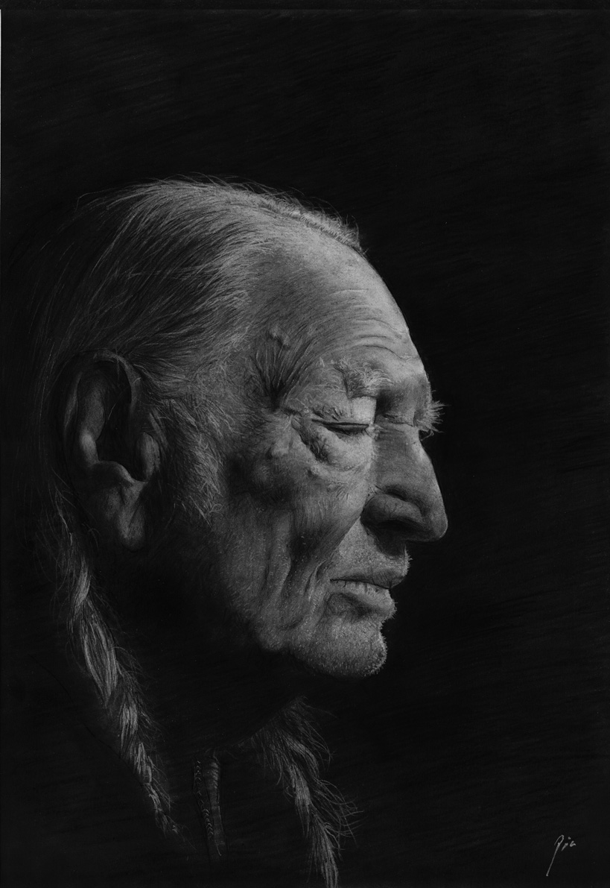
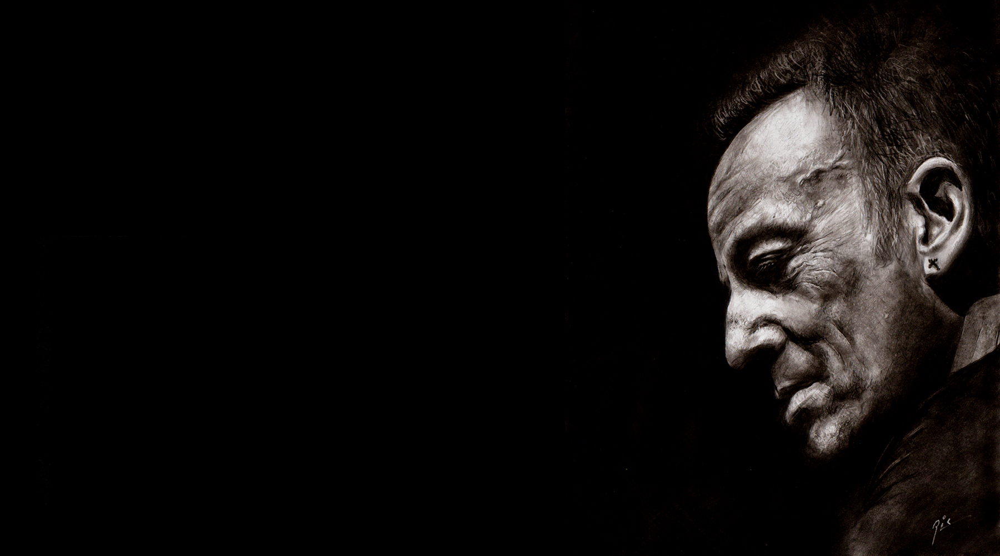
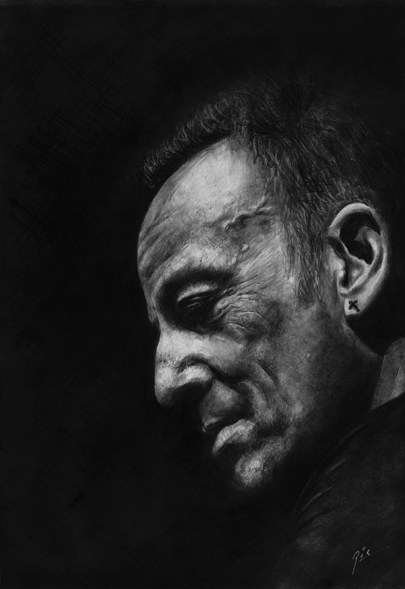
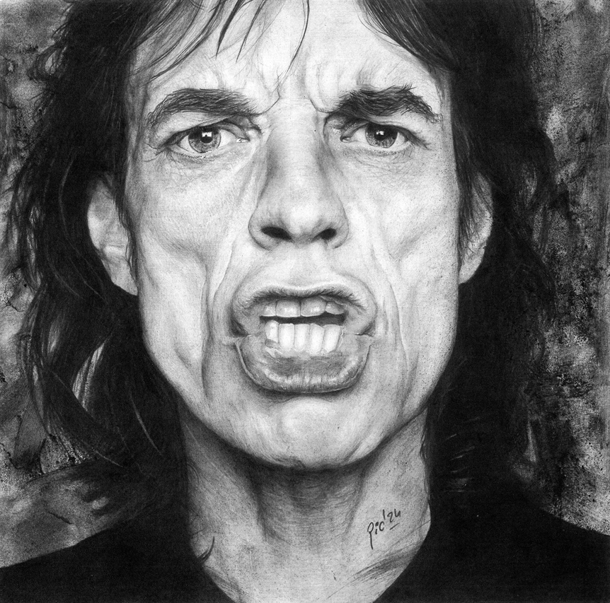
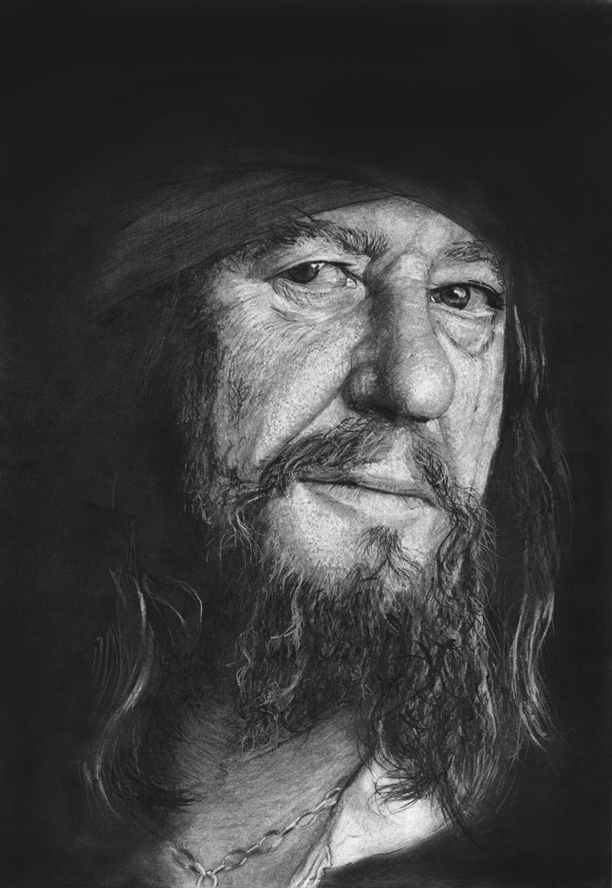
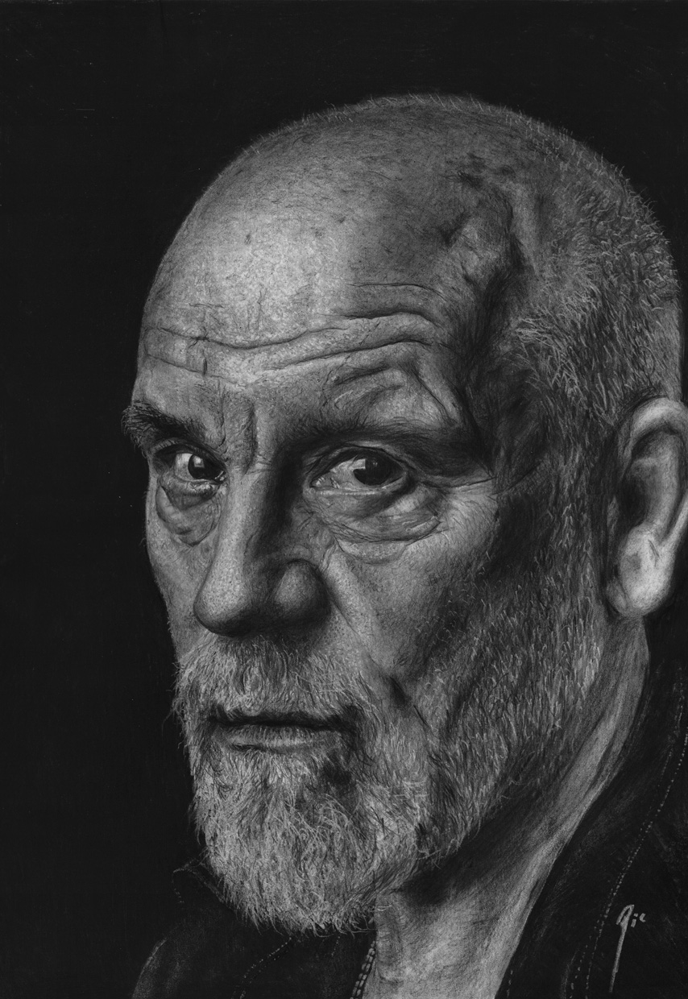
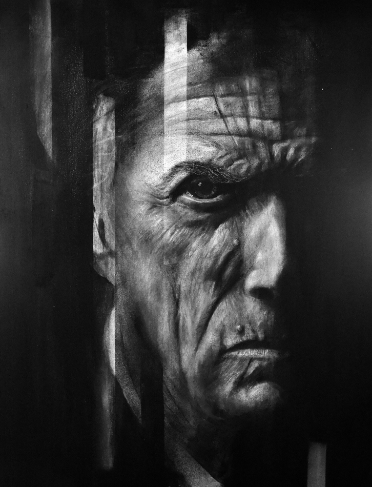
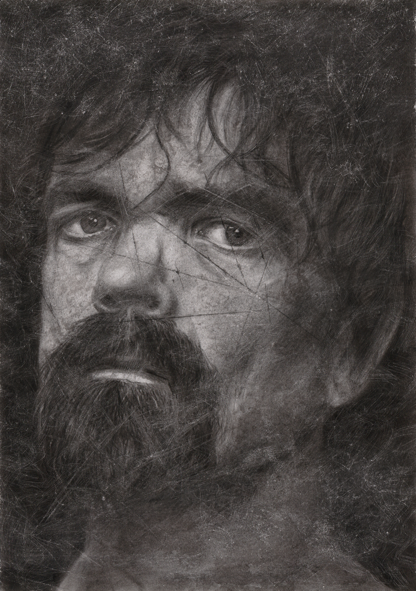
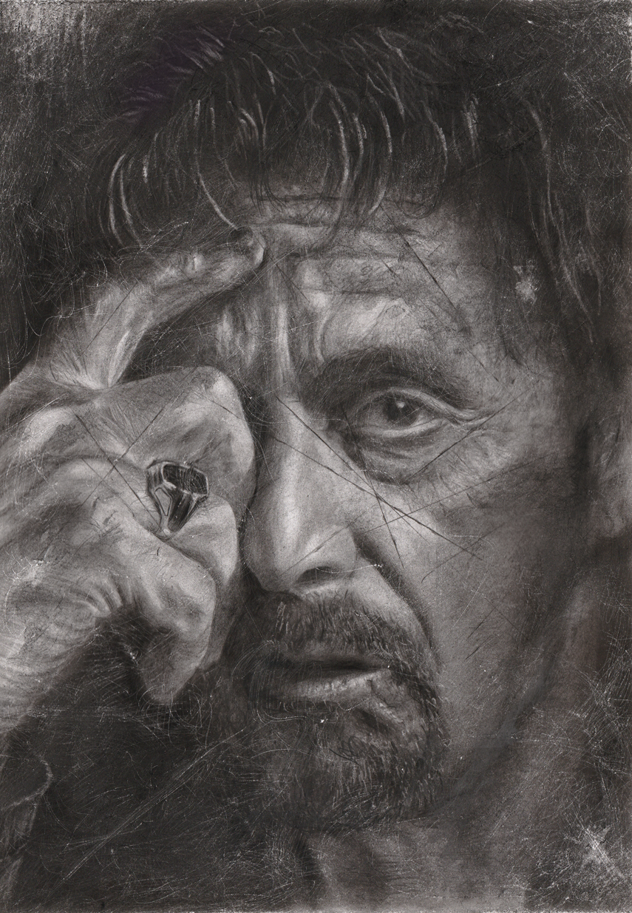

Dossier artístico — Madrid
Ricardo de los Ríos
firma artística: Ric
Obra sobre papel · retrato contemporáneo
Grafito, carboncillo y claroscuro
Madrid · España
Miradas · Rotos · Iconos

Statement
“Trabajo el retrato como un territorio de tensión: la precisión del dibujo frente a la fragilidad de la imagen, la mirada frente al silencio, la luz frente a aquello que se rompe.”
Biografía
Ricardo de los Ríos
Artista español afincado en Madrid. Trabaja bajo el nombre artístico Ricardo de los Ríos.
Su trabajo se centra principalmente en el retrato contemporáneo realizado con grafito y carboncillo sobre papel. La mirada, el claroscuro y la tensión expresiva del rostro son los ejes principales de una obra que parte de la precisión técnica para avanzar hacia un lenguaje cada vez más personal.
En sus piezas conviven la tradición del dibujo figurativo, la intensidad del retrato clásico y una sensibilidad más actual, donde la imagen puede aparecer erosionada, fragmentada o intervenida. Esta evolución ha dado lugar a líneas de trabajo como Miradas y Rotos.
Su obra ha sido seleccionada y reconocida en distintos certámenes vinculados al dibujo, la pintura y el arte realista, consolidando un recorrido todavía breve, pero cada vez más definido.
Obra seleccionada
Sustituir estas imágenes por archivos propios en la carpeta /images







Líneas de trabajo
01
02
03
Una obra entre la precisión y la fractura
El dibujo como presencia física: una imagen que no solo representa, sino que también respira, se desgasta y revela su propia construcción.
Miradas
Retratos construidos alrededor de la intensidad de los ojos. La mirada funciona como centro narrativo y emocional de la obra.
Rotos
Una evolución hacia piezas más físicas, con zonas erosionadas, materia, rascaduras, polvo, cortes visuales y fragmentos apenas sugeridos.
Iconos
Figuras reconocibles tratadas desde la luz, el gesto y la vulnerabilidad. Más que el personaje, interesa la presencia humana que queda detrás.
Selecciones, premios y exposiciones
Una relación sobria de premios, menciones, selecciones y presencia expositiva. Conviene mostrar el recorrido completo porque todavía es una trayectoria en construcción y cada hito ayuda a situar la obra.
2026
Exposición individual
Miradas
Centro Cultural Juan Genovés · Moncloa-Aravaca · Madrid.
Participación invitada
La Milla del Arte
Madrid. Presentación de obra junto a galerías y artistas de reconocido prestigio.
2025
Primer Premio
Capitán Barbosa
Medalla Marceliano Santamaría Sedano.
Selección
Make my day…
X Salón de Arte Realista.
Selección
Satisfaction II
X Salón de Dibujo, Grabado e Ilustración.
Selección
Mr. Malchovic
Certamen Sólo Arte 2025.
2024
Primer Premio
Always on my Mind
Medalla de Pintura Antonio Muñoz Degrain · Certamen Sólo Arte.
Mención de Honor
Satisfaction
IX Salón de Dibujo, Grabado e Ilustración.
Selección
Epílogo
IX Salón de Dibujo, Grabado e Ilustración.
Selección
Through My Soul
Certamen Sólo Arte 2024.
Obra
Técnicas principales
Grafito y carboncillo sobre papel
Retrato contemporáneo, claroscuro, obra figurativa y líneas de trabajo en desarrollo.
Series
Miradas · Rotos · Iconos
Evolución desde el retrato hiperrealista hacia una imagen más expresiva, fragmentada y física.
Contacto
Obra disponible · encargos · exposiciones · colaboraciones